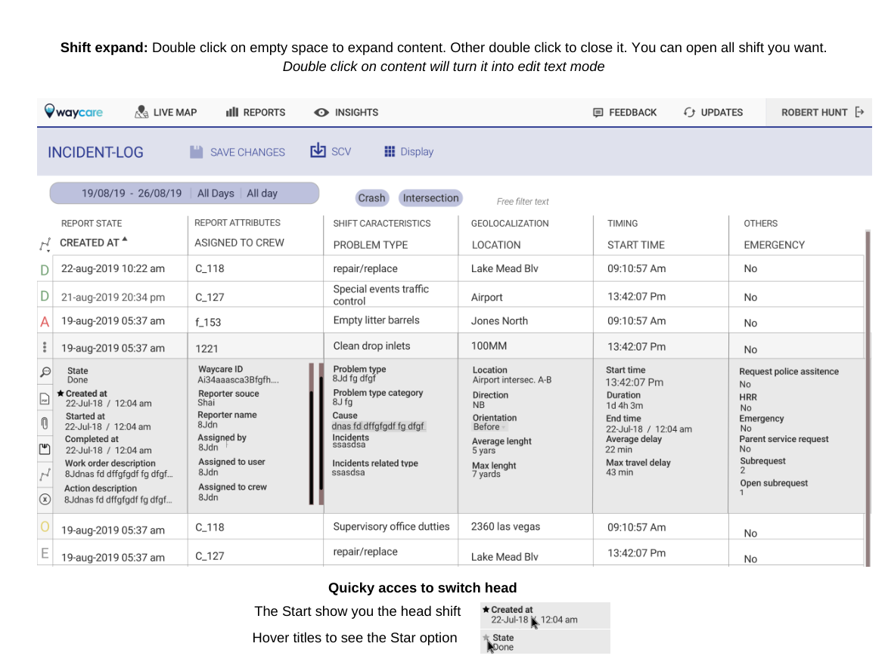
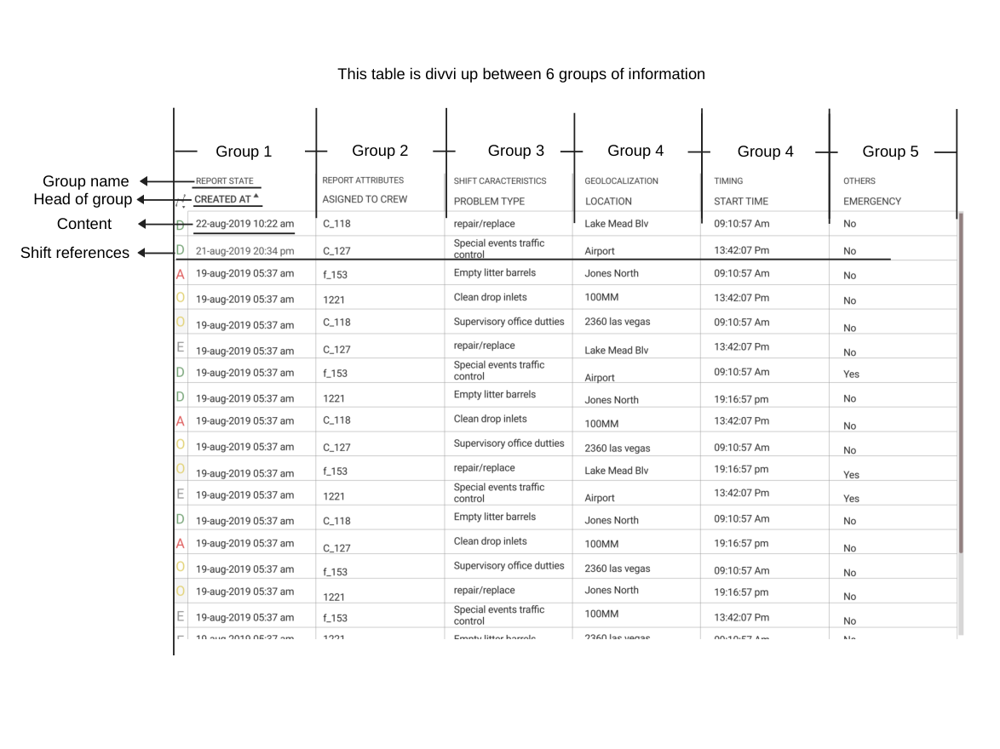
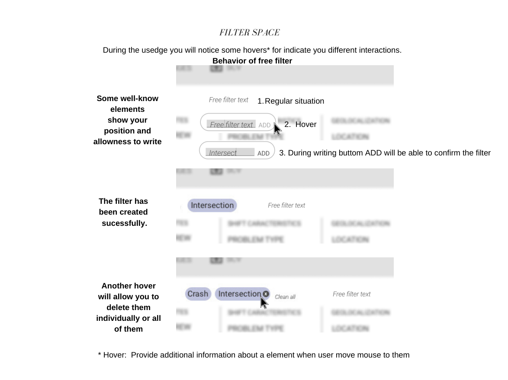
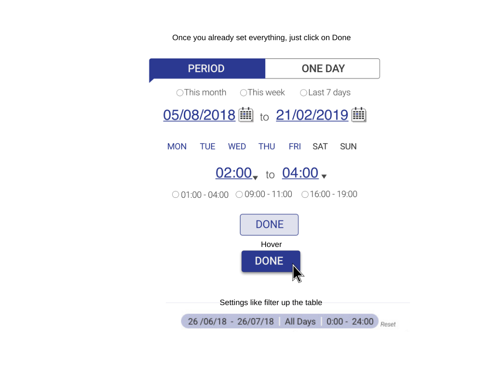
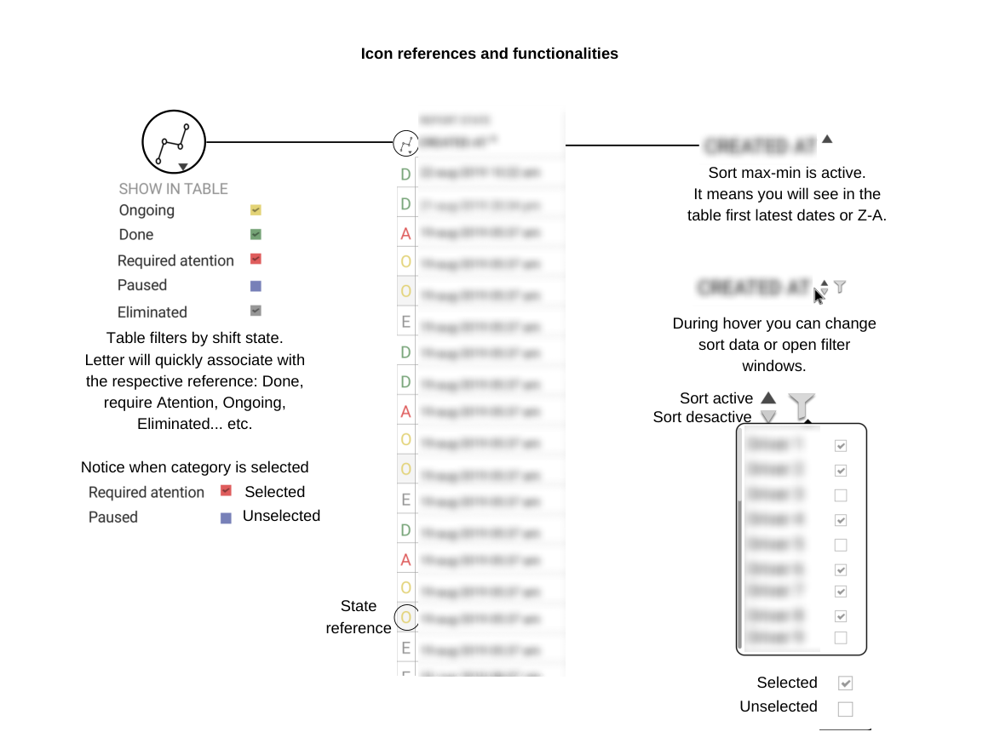
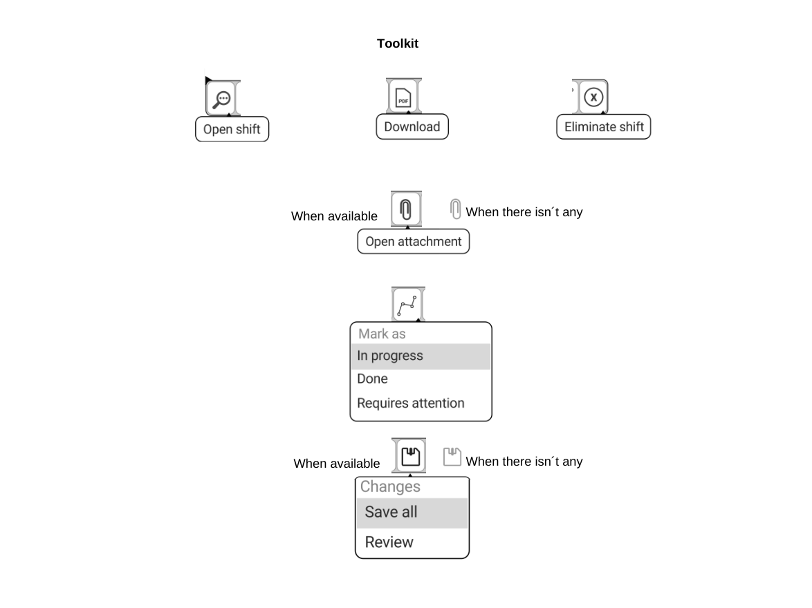
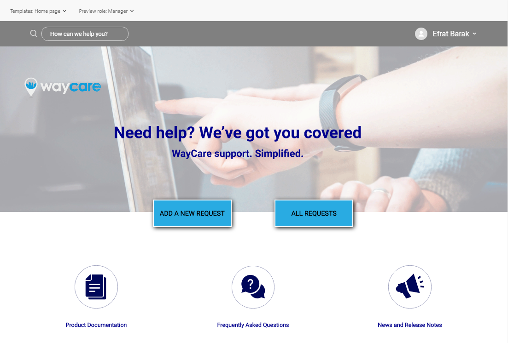

Redesigning a filterable data table for Waycare’s AI traffic-management platform, used in smart-city operations.

Waycare’s platform uses AI for traffic management in smart-city operations. Its back-office includes an incident log: a filterable data table with many columns and a long history of shifts and reports.
How do you give users dense data, flexible filtering and in-place editing without making the screen feel like a spreadsheet?
Columns are split into labeled groups (report state, report attributes, shift characteristics, geolocation, timing, others). A Display panel lets each user choose which groups to show and save the workspace.

Free-text filters become chips once confirmed. Hover reveals each element’s behavior, and chips can be deleted individually or all at once.

Two modes: Period (date range, weekdays, hours and presets) and One day (a day and an hour range). Selected values turn blue, and the applied range collapses into a chip that resets on hover. I iterated on it in Sketch.

A one-letter state at the start of each row (Ongoing, Done, Required attention, Paused, Eliminated) gives quick orientation. Sorting and filters appear on hover.

Each shift has a toolkit: open shift, download, open attachment, mark as, changes, eliminate. Edited fields carry a marker with their history, and a dialog asks whether to save now or review.

I documented the behavior in a 16-page spec and built reusable Sketch symbols (radio buttons, checkboxes, picker states). The UI was finished pixel-perfect.
I also worked on the customer-facing Help Center.
